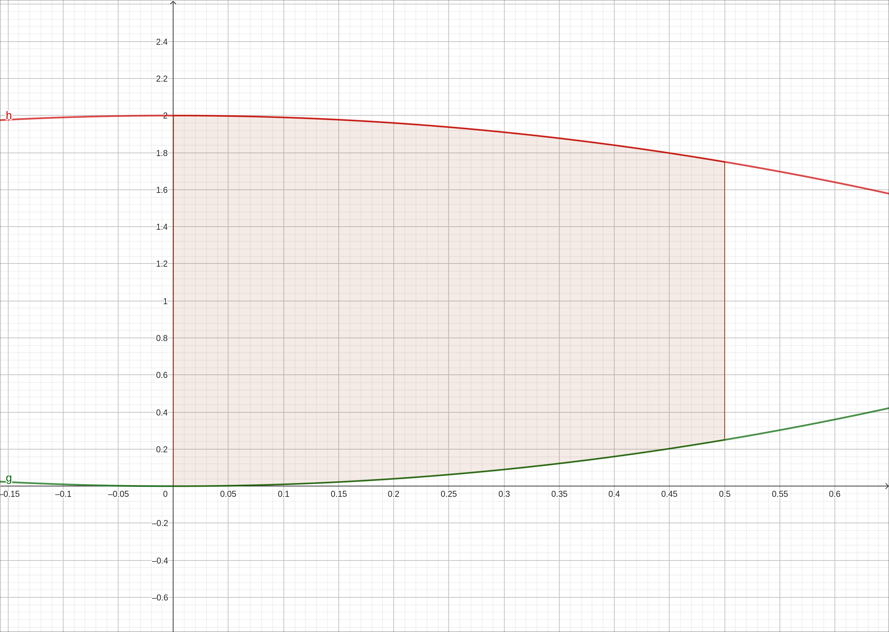
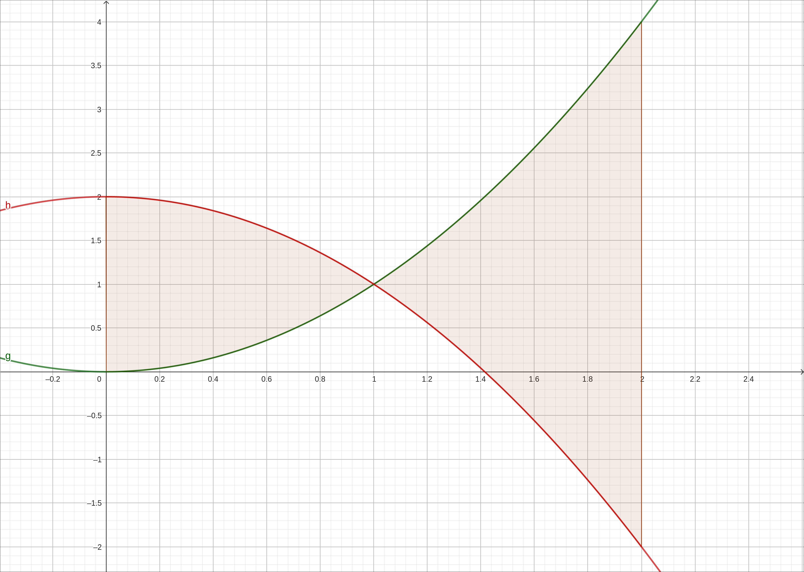
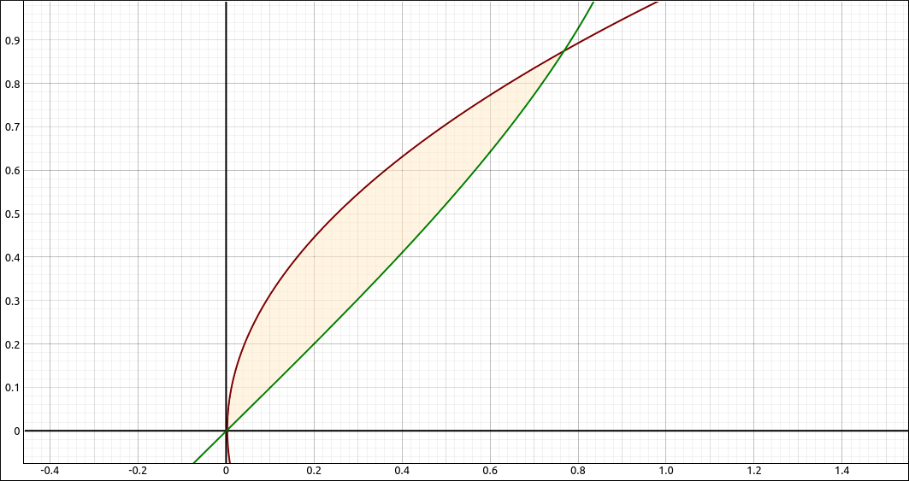
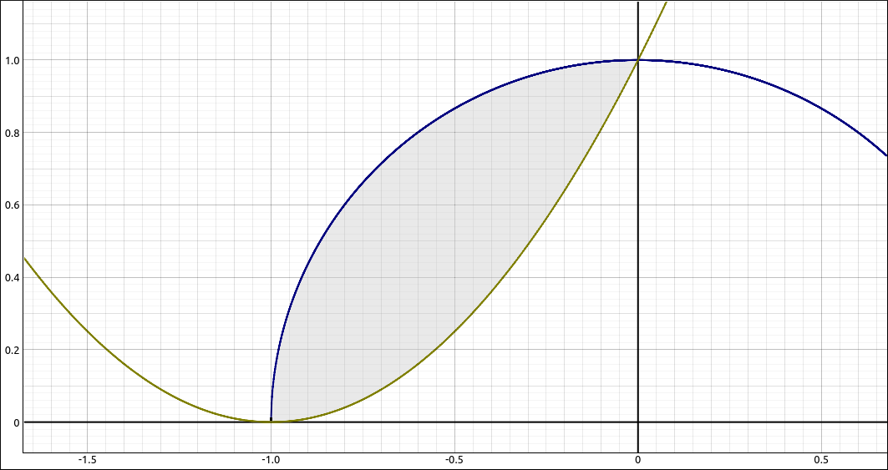

Areas Between Curves#
Discussion & Definitions#
In most Calculus books the area between curves section is mainly an introductory exercise in going through the process of representing a quantity as the limit of a Riemann sum and hence establishing that it is a definite integral. This is a good exercise to do since many quantities in the physical sciences and economics (among others) can be represented this way, but we will leave the details to the textbook you are using.
Theorem: Finding the Area between Two Curves
Let \(f(x)\) and \(g(x)\) be continuous functions such that \(f(x) \geq g(x)\) over an interval \([a, b]\). Let \(R\) denote the region bounded above by the graph of \(f(x)\), below by the graph of \(g(x)\), and on the left and right by the lines \(x = a\) and \(x = b\), respectively. Then, the area of \(R\) is given by
For example, if we take the curves \(f(x) = 2-x^2\) and \(g(x) = x^2\) then the area between these two curves on the interval \([0, 1/2]\) is

Area Between \(f(x) = 2-x^2\) and \(g(x) = x^2\) on \([0, 1/2]\)#
If the two curves intersect so that over the interval one is no longer larger than the other, that is, they cross, then to find the area of the region bounded by the curves we need to either integrate the absolute value of the difference or break the integral up into separate integrals each of which has one function always over the other.
Theorem: Finding the Area of a Region between Curves That Cross
Let \(f(x)\) and \(g(x)\) be continuous functions over an interval \([a, b]\). Let \(R\) denote the region between the graphs of \(f(x)\) and \(g(x)\), and be bounded on the left and right by the lines \(x = a\) and \(x = b\), respectively. Then, the area of \(R\) is given by
Absolute values are notoriously difficult for most computer algebra systems to deal with since they require the system to break up the integral between the positive and negative regions of the integrand, which require the system to solve the integrand for 0, think about combinations of trigonometric functions. In most cases, it is better to do this yourself by finding where the functions cross and then do an integral for each separate section.
For example, if we take the curves \(f(x) = 2-x^2\) and \(g(x) = x^2\) and wish to find the area between these two curves on the interval \([0, 2]\), first we would graph the curves and look at the enclosed region.

Area Between \(f(x) = 2-x^2\) and \(g(x) = x^2\) on \([0, 2]\)#
Clearly the curves intersect. Solving for the intersection points gives two solutions, \(-1\) and 1 so we have,
Of course, if the curves intersect more than once over the interval of interest we would break the integral up into more segments. We can also switch the roles of x and y around to find the areas of regions bounded by functions in y, for example, \(x = y^2\) and \(x = \sin(y)\).

Area Between \(x = y^2\) and \(x = \sin(y)\)#
Example: Area bounded by \(f(x) = \sqrt{1 - x^{2}}\) and \(g(x) = x^{2} + 2 x + 1\)#
If we graph these two functions we get the following image (with the region we want shaded).

Area bounded by \(f(x) = \sqrt{1 - x^{2}}\) and \(g(x) = x^{2} + 2 x + 1\)#
Solving \(\sqrt{1 - x^{2}} = x^{2} + 2 x + 1\) gives us two solutions \(-1\) and 0. So our area is
GeoGebra#
Input the two functions,
sqrt(1 - x^2)
and
x^2 + 2 x + 1
Assume they came in as f and g respectively. Find the intersection points with Solve(f=g), giving \(-1\) and 0, then find the area with, Integral(f(x)-g(x),-1,0). The result is 0.45206.
CLAE#
Input the two functions,
sqrt(1 - x^2)
and
x^2 + 2*x + 1
Assume they came in as R1 and R2 respectively. Find the intersection points first by taking the difference R1-R2 and then selecting Algebra > Solve, giving \(-1\) and 0, then find the area with, Calculus > Definite Integral, using the bounds of \(-1\) and 0. The result is,
Maxima#
Input the two functions,
kill(all);
f(x):=sqrt(1 - x^2);
g(x):=x^2 + 2*x + 1;
The solve command does not work well with these equations but from the graph it appears that the solutions are \(-1\) and 0. Finding the integral with,
integrate(f(x)-g(x),x,-1,0);
gives,
Example: Area bounded by \(f(x) = 2-x^2\) and \(g(x) = x^2\) on \([0, 2]\)#
We did this example above but here we will look at the processes in our computer algebra systems.
Area bounded by \(f(x) = 2-x^2\) and \(g(x) = x^2\) on \([0, 2]\)#
GeoGebra#
Input the two functions,
2-x^2
x^2
Assume they came in as f and g respectively. Find the intersection points with Solve(f=g), giving \(-1\) and 1, then find the area of the first region with, Integral(f(x)-g(x),0, 1) and then the second region with Integral(g(x)-f(x),1, 2). The results are 1.33333 and 2.66667 respectively. Adding these gives us the expected result of 4.
Note that if we tried the absolute value definition and input Integral(|f(x)-g(x)|,0,2) GeoGebra returns 4. Under the hood, an approximation technique was used on the function.
CLAE#
Input the two functions,
2-x^2
x^2
Assume they came in as R1 and R2 respectively. Find the intersection points first by taking the difference R1-R2 and then selecting Algebra > Solve, giving \(-1\) and 1. Select the R1-R2 expression, then find the first area with, Calculus > Definite Integral, using the bounds of 0 and 1. The result is, \(\frac{4}{3}\). Now input R2-R1, select it , then find the second area with, Calculus > Definite Integral, using the bounds of 1 and 2. The result is, \(\frac{8}{3}\). Add these together to obtain the final answer of 4.
If we tried the absolute value approach. Input abs(R1-R2), select this and then select Calculus > Definite Integral, using the bounds of 0 and 2. The result is,
Clearly, CLAE did not want to do the integral. If we select this and then select Algebra > Approximate we will get the solution of 4, although it took several seconds for this to evaluate. On the other hand, we could have selected Calculus > Definite Integral Approximation with the bounds 0 and 2 and the result would be 4 again, but quicker this way.
Maxima#
Input the two functions,
kill(all);
f(x):=2-x^2;
g(x):=x^2;
Find the intersection points with
solve(f(x)=g(x));
giving \(-1\) and 1. Then find the integral with,
integrate(f(x)-g(x),x,0,1)+ integrate(g(x)-f(x),x,1,2);
the result being 4, as expected.
If we tried the absolute value approach. Input,
h(x):=abs(f(x)-g(x))
then take the integral with,
integrate(h(x),x,0,2);
the result will be,
Clearly, Maxima did not want to do the integral. If we instead use an integral approximation command,
romberg(h(x),x,0,2);
we will get the solution of 4.0.